Aprendiendo nuestra historia y números
| Número | Nombre | Cantidad | Nombre Grande |
|---|---|---|---|
| 1 | Chikichik | 1.000 | nupanti |
| 2 | Jimiar | 5.000 | Uwej-nupanti |
| 3 | Menaint | 10.000 | Nawe-nupanti |
| 4 | Aintiuk | 20.000 | Jimiar-nawe-nupanti |
| 5 | Uwej | 30.000 | Menaint-nawe-nupanti |
| 6 | Ujuk | 40.000 | Aintiuk-nawe-nupanti |
| 7 | Tsenkent | 50.000 | Uwej-nawe-nupanti |
| 8 | Yarush | 60.000 | Ujuk-nawe-nupanti |
| 9 | Usumtai | 70.000 | Tsenkent-nawe-nupanti |
| 10 | Nawe | 80.000 | Yarush-nawe-nupanti |
| 20 | Jimiar-nawe | 90.000 | Usumtai-nawe-nupanti |
| 30 | Menaint-nawe | 100.000 | Chikich-washim-nupanti |
| 40 | Aintiuk-nawe | 200.000 | Jimiará-washim-nupanti |
| 50 | Uwej-nawe | 300.000 | Menaint-mashim-nupanti |
| 60 | Ujuk-nawe | 400.000 | Aintiuk-washim-nupanti |
| 70 | Tsenkent-nawe | 500.000 | Uwej-washim-nupanti |
| 80 | Yarush-nawe | 600.000 | Ujuk-washim-nupanti |
| 90 | Usumtai-nawe | 700.000 | Tsenkent-washim-nupanti |
En la cultura Shuar los días de la semana tienen nombres de las palmeras existentes en nuestro medio y cada uno tiene sus significados.
| LOS DÍAS DE LA SEMANA | ||
|---|---|---|
| 1 | Lunes | Áchu |
| 2 | Martes | Ampakai |
| 3 | Miércoles | Tintiuk |
| 4 | Jueves | Kuúnt |
| 5 | Viernes | Kunkuk i |
| 6 | Sábado | Saké |
| 7 | Domingo | Ayámtai |
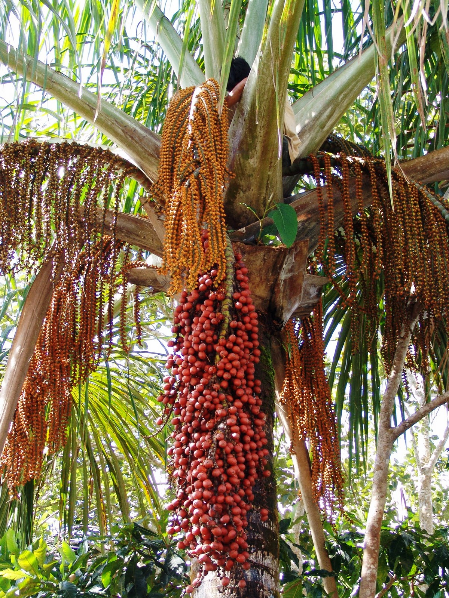
Es llamada "Palma de Moriche" o aguaje. Crecen en partes pantanosas. Frutos comestibles, con pepas se fabrican botones. Aquí se reproducen los guacamayos.
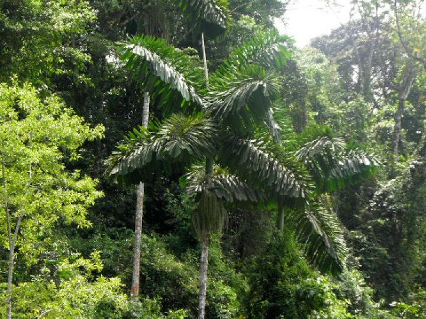
Palmera comestible. Comercializan sus palmitos. Tallos duros usados para construcción de casas y cercados.
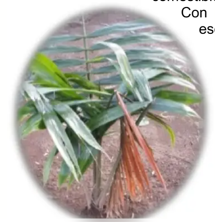
Palmera comestible. Con la cerda se fabrica la escoba.
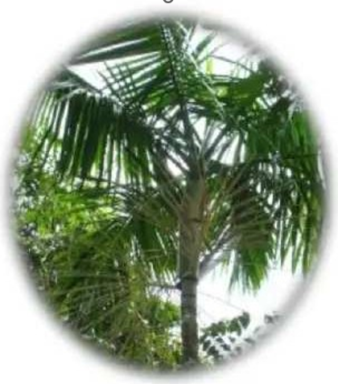
Palmera comestible en extinción, solo se encuentra en altas cordilleras.
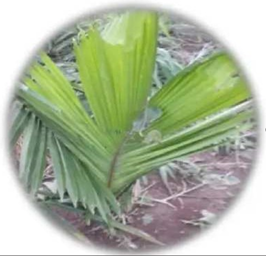
(Palma real). Muy altas, abundan en cordilleras. Se comen frutas cocidas. En su médula vive el mukint i (chontacuro).
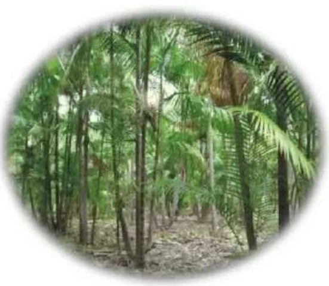
Hojas finas, se comen palmitos y frutos. Palmeras en extinción.
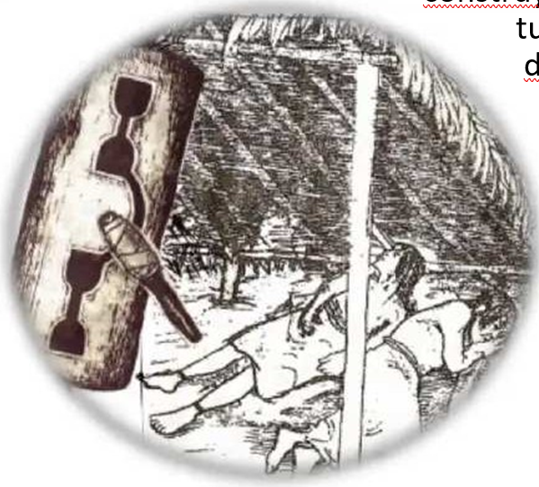
Cobertizo sagrado cerca de la tuna o cascada sagrada. Desde allí invocan a Arutam. Construido con hojas de chapi.
Los meses del año shuar se los ha puesto los nombres de la manifestación de Arútam, de los astros y las épocas en que las plantas dan frutos y los animales se reproducen.
| LOS MESES DEL AÑO | ||
|---|---|---|
| 1 | Enero | Etsa |
| 2 | Febrero | Yuranke |
| 3 | Marzo | Nase |
| 4 | Abril | Tuntiak |
| 5 | Mayo | Yumi |
| 6 | Junio | Tsunki |
| 7 | Julio | Shakaim |
| 8 | Agosto | Ayumpum |
| 9 | Septiembre | Namur |
| 10 | Octubre | Nunkui |
| 11 | Noviembre | Esat |
| 12 | Diciembre | Yankuam |
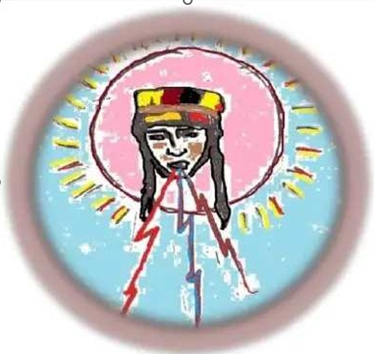
Es Sol, hijo de Wanupa. Arquetipo del cazador, defendió a los shuar de los Iwia (antropófagos).
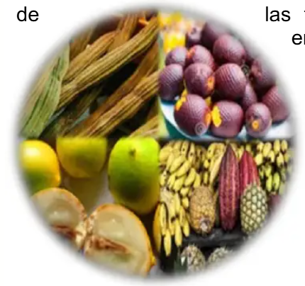
Clase de frutas de la selva. Mes de frutas y tiempo de engorde de animales.
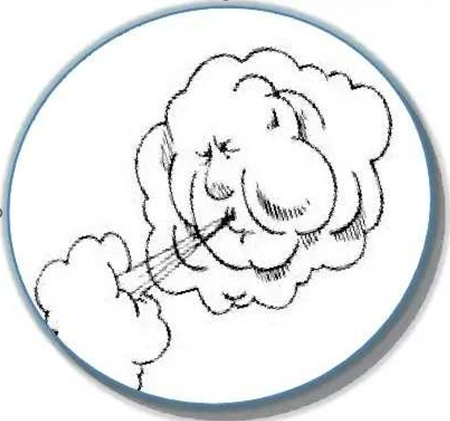
Significa viento. Época de renovación de hojas y caída de algodones.
Es el Arco iris. Cuando aparece entre sol y lluvia, indica guerra y muerte.
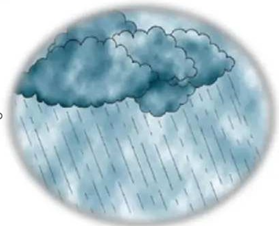
Mes de la lluvia. Tiempo de culebras y ranas depositando huevos.
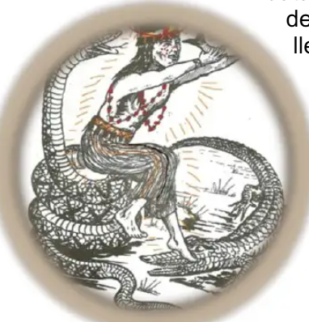
Manifestación de Arútam. Señor de seres acuáticos. Da poder a los chamanes.
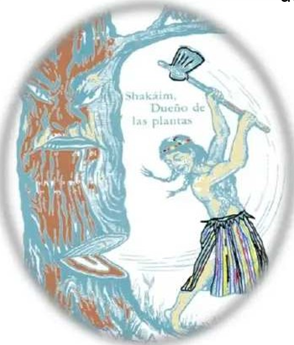
Manifiesta como hombre trabajador. Enseña construcción y agricultura.
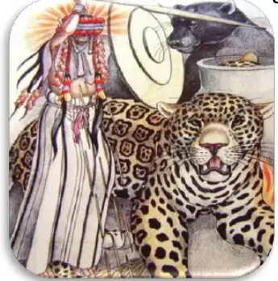
Dios de vida y muerte. Se pide fertilidad y fuerza para defender el hogar.
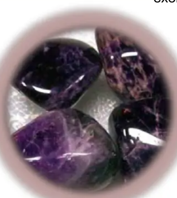
Piedra sagrada usada por chamanes para alejar malos espíritus.
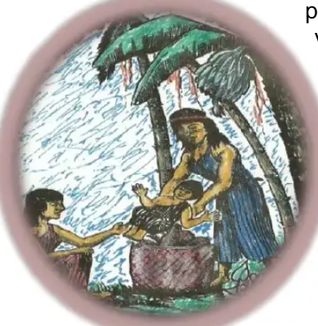
Se manifiesta como mujer. Enseña agricultura, alfarería y parto.
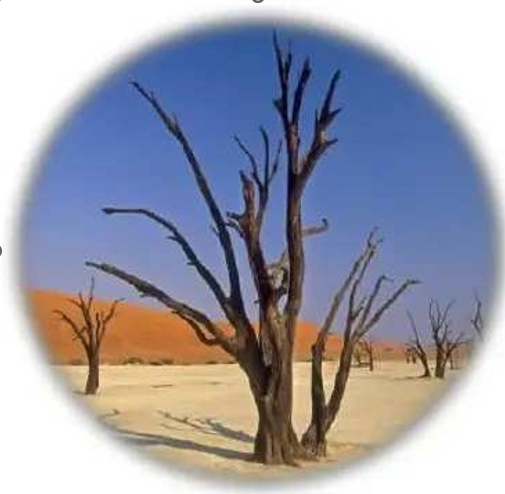
Época de verano. Árboles renuevan hojas, ríos secan. Tiempo de carestía.
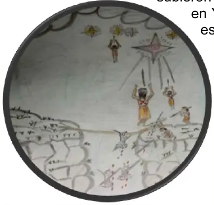
Lucero. Hermano mayor de los Yá, subieron al cielo tras vengar a su madre.